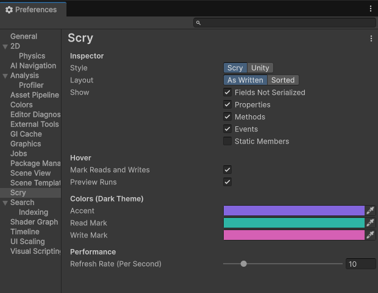
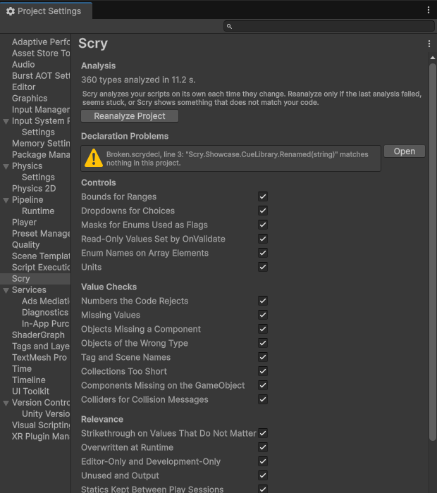

Settings reference
Every project setting and preference.
Preferences
Edit > Preferences > Scry, saved in the project's UserSettings folder, for your own Editor only.

| Setting | Description |
|---|---|
| Style | Unity keeps each type's own editor, or Unity's default Inspector, everywhere, until you switch a type to Scry in its Scry panel. |
| Layout, Show | The default Layout (order of members) and Show (kinds of member shown) of every Inspector. A component's Scry panel can set its own. |
| Mark Reads and Writes | Resting the pointer on a member that runs code marks the values it reads and writes. |
| Preview Runs | Resting the pointer on a member that runs code shows, in place, the values its run would leave, without keeping them. |
| Accent, Read Mark, Write Mark | The color of Scry panels, and of the read and write marks, for each Editor theme. |
| Refresh Rate (Per Second) | How often live values are read again. Lower it if the Inspector feels slow. |
| Clear Them | Clears your answers for code that no longer exists. |
Project settings
Edit > Project Settings > Scry, saved in ProjectSettings/ScrySettings.asset, which you commit with the project. Each switch turns off, for everyone, one kind of thing Scry draws from your code.

Analysis
| Setting | Description |
|---|---|
| Reanalyze Project | Runs the analysis again. Scry already analyzes your scripts each time they change. |
| Declaration Problems | Lists the keys of declaration files that match nothing. |
Controls
| Setting | Description |
|---|---|
| Bounds for Ranges | Shows the minimum and maximum of a number the code clamps, or the values where it wraps around, at the ends of its field. |
| Dropdowns for Choices | Gives a dropdown to a value the code compares against fixed values. |
| Masks for Enums Used as Flags | Gives a mask to an enum the code combines bit by bit. |
| Read-Only Values Set by OnValidate | Makes a field OnValidate always sets read-only. |
| Enum Names on Array Elements | Labels the elements of an array indexed with one enum. |
| Units | Shows a number's unit, and warns when two uses disagree. |
Value Checks
| Setting | Description |
|---|---|
| Numbers the Code Rejects | Errors on a number outside what the code accepts. |
| Missing Values | Errors on a reference or string used without a check while it is None or empty. |
| Objects Missing a Component | Errors on an object that lacks a component the code gets from it. |
| Objects of the Wrong Type | Errors on an object that is not the type the code casts it to. |
| Tag and Scene Names | Errors on a tag or scene name the project does not have. |
| Collections Too Short | Errors on a collection with fewer elements than the code indexes. |
| Components Missing on the GameObject | Flags a component the code needs on its GameObject. Switch it off in a project that adds components at runtime. |
| Colliders for Collision Messages | Flags a component with collision or trigger messages and no collider. |
Relevance
| Setting | Description |
|---|---|
| Strikethrough on Values That Do Not Matter | Strikes through a field the code ignores in the current state. |
| Overwritten at Runtime | Marks a field Awake, Start or OnEnable overwrites. |
| Editor-Only and Development-Only | Marks members that do nothing in player or release builds. |
| Unused and Output | Marks a field no code reads as unused, and a field the code only writes as output. |
| Statics Kept Between Play Sessions | Warns on a static field nothing resets while domain reload is off. |
Code Formatting
| Setting | Description |
|---|---|
| Regions as Bands | Shows each #region as a group that folds. |
| Headers, Separators, Hints | Reads each from Doc Comments (///), Plain Comments (//), or not at all. |
| Spacing from Blank Lines | Adds space where the code leaves extra blank lines. |